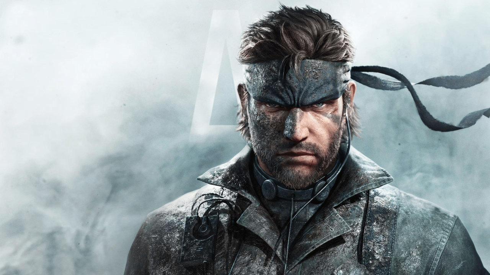

Описание
серия компьютерных игр в жанрах стелс-экшен и action-adventure, разработанная и изданная компанией Konami. Большинство игр серии были созданы под руководством геймдизайнера Хидэо Кодзимы. В большинстве игр серии управляемый игроком герой должен незамеченным пробираться на охраняемые военные объекты, избегая обнаружения.
Игры серии отличаются сложными сюжетами, большим количеством внутриигрового видео и озвученных диалогов, намеренно придающих им сходство с кинематографом. Действие игр серии происходит в новейшее время — от шестидесятых годов XX века до близкого будущего
Сюжет
Хронологически первой является Metal Gear Solid 3, чьи события происходят в 1964 году. Спецагент США Нейкед Снейк под руководством майора Зеро отправляется в джунгли Советского Союза, чтобы отыскать и вернуть в США учёного, который разрабатывает новый тип танка, способный запустить ядерные ракеты.
Персонажи
Серьёзное влияние на образ главного героя оказали фильмы Джона Карпентера «Побег из Нью-Йорка» и «Побег из Лос-Анджелеса». С каждой следующей игрой все заметнее становится сходство Солида Снейка и Снейка Плискина (главного героя фильмов), и внешнее, и характерное. В игре Metal Gear Solid 2: Sons of Liberty имеется прямая отсылка на фильмы — Солид Снейк, скрывая своё имя, называет себя лейтенантом «Ирокезом Плискиным».
Металгиры
Обязательным элементом серии являются «металгиры» — огромные боевые машины-мехи, способные запускать ядерные ракеты; каждая игра серии содержит по меньшей мере один такой «металгир»[4]. В соответствии с мифологией серии, прародителем «металгиров» является «Шагоход»
История создания
Несмотря на то, что в серии игр MGS присутствует множество сцен насилия, в ней чувствуется тон пацифизма. Он проявляется через обращение к таким философским мыслям, как бесполезность войны, глупость устрашения ядерным оружием, опасность ядерного оружия вообще, психологическое влияние военных действий на взрослых и детей, представление врага таковым в относительном времени. Эти мысли и сама тема игр отражают настрой японских фильмов, сделанных после бомбардировок Хиросимы и Нагасаки в 1945 году. Другой волнующей темой игры является негативное представление правительства, как например в Metal Gear Solid 2: Sons of Liberty.
Сюжет оригинального Metal Gear, выпущенного в 1987 году во времена холодной войны, затрагивает действия политиков Запада и Востока, которые манипулируют солдатами в своих целях. Это объясняет смысл Outer Heaven (обычно переводится как «Внешние Небеса», также возможен перевод «Дальняя Гавань») — страны без политиков, всецело созданной для наёмников и солдат. Metal Gear 2: Solid Snake, вышедший в 1990 году, в период окончания холодной войны, развивает тему действий политиков, политических интриг, морали на поле боя, военной истории и негативного влияния войны.
Радиопостановка
Радиопостановка, базирующаяся на Metal Gear Solid проигрывалась в Японии с 1998 по 1999 годы как часть программы clud DB, созданной Konami. Режиссёром выступил Сюё Мурата (Shuyo Murata) а сценаристом Мотосада Мори (Motosada Mori). Драма шла 18 недель, повторяя полный сюжет три раза. Также она была доступна на двух CD.